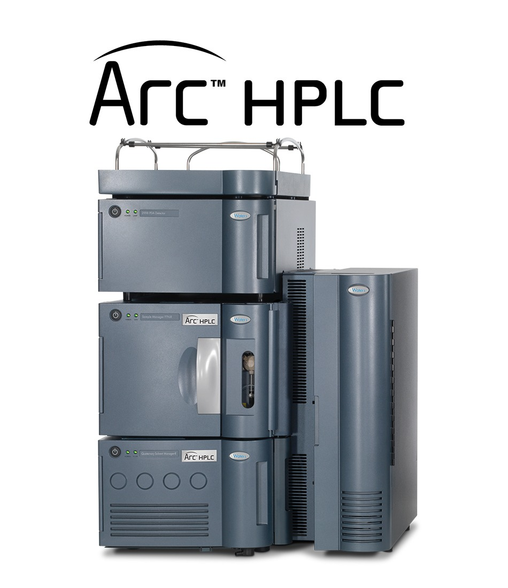

HPLC / UHPLC
Phân tích hoạt chất, chất bảo quản, vitamin, độc tố vi nấm, phụ gia thực phẩm trong thực phẩm, mỹ phẩm và nước.
- Ứng dụng: thực phẩm, TPBVSK, mỹ phẩm
- Chỉ tiêu: Vitamin, Aflatoxin, chất bảo quản
- Thời gian phân tích: 3 - 7 ngày